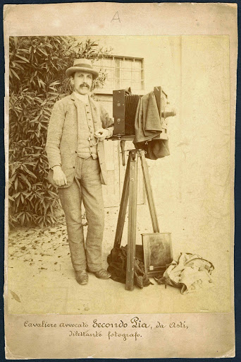
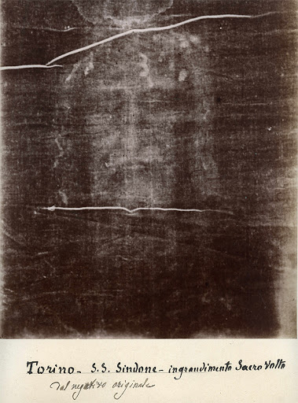
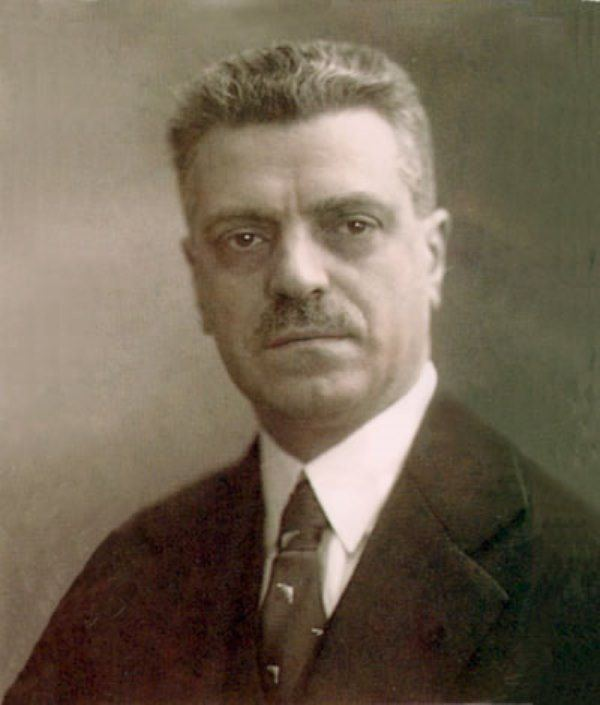
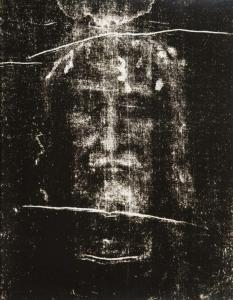

Este lienzo es el artefacto mas estudiados en la historia, aunque la ciencia pudo analizarla de cerca desde hace mas de 100 años
Es un lienzo de lino de 441 cm de largo por 113 cm de ancho, con un peso aproximado de 1.129 kg. Esta tejido en forma de espina de pescado y en torcion en Z
En el año de 1898 se llevo a cabo una ostencion de la Sindone por motivo de la boda real del principe de la Casa de Saboya, el abogado Secondo Pia fue encargado de fotografiar por primera vez la Sindone.
Al revelar las fotografias se percato que en el negativo se apreciaba el positivo del rostro del hombre de la Sindone, como si fuese una fotografia autentica de una persona. La gente de la epoca considero como fraude los resultados de Secondo Pia, aunque desperto la curiosidad en la comunidad cientifica
En 1932 el fotografo Giuseppe Enrie tomo la segunda fotografia de la Sindone, validando el hallazgo de Pia
En 1973 el palinologo suizo Max Frei tomo muestras de la Sindone con adhesivos para determinar su procedencia.
En 1978 se creo un equipo de investigacion

Las conclusiones fueron las siguientes: Estabilidad a altas temperaturas, estabilidad al agua, la imagen no es pintura sino una degradacion de la celulosa de las fibras superficiales , la imagen no fue por contacto sino por una emanacion de luz muy potente para dejar grabada la imagen, el cuerpo estaba ingravido
En 1988 se realizo una datacion por el metodo de carbono-14, este proceso consiste en quemar una muestra biologica y calcular los isotopos de carbono-14. Tres laboratorios se encargaron de realizar dicha datacion, datandolo entre 1260 y 1390.
En el año 2002 se le realizo una intervencion de conservacion, retirando la tela de holanda de 1534 y los parches de las clarisas, para poner un nuevo soporte